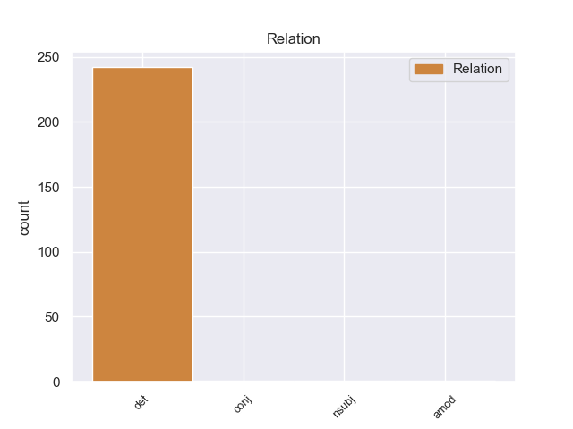
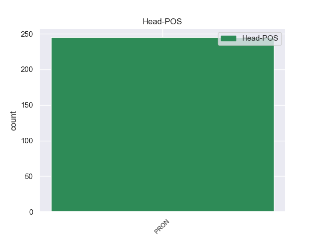
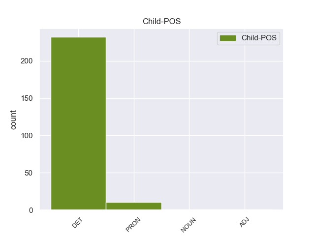

Distribution of features within this leaf



Agreement Rules sorted by frequency.
- When the dependent token is the determiner(det) of the head token, and the head token is PRON
1 πρόκειται _ _ _ _ 0 _ _ _
2 για _ _ _ _ 0 _ _ _
3 αυτό _ _ _ _ 0 _ _ _
4 το ο DET _ Case=Nom|Definite=Def|Gender=Neut|Number=Sing|PronType=Art 5 det _ _
5 οποίο οποίο PRON _ Case=Nom|Gender=Masc|Number=Sing|Person=3|PronType=Rel 0 _ _ _
6 αποκαλύφθηκε _ _ _ _ 0 _ _ _
7 κατά _ _ _ _ 0 _ _ _
8 τη _ _ _ _ 0 _ _ _
9 διάρκεια _ _ _ _ 0 _ _ _
10 αυτής _ _ _ _ 0 _ _ _
11 της _ _ _ _ 0 _ _ _
12 διαδικασίας _ _ _ _ 0 _ _ _
13 , _ _ _ _ 0 _ _ _
14 ότι _ _ _ _ 0 _ _ _
15 ο _ _ _ _ 0 _ _ _
16 Εισαγγελέας _ _ _ _ 0 _ _ _
17 κάποια _ _ _ _ 0 _ _ _
18 στιγμή _ _ _ _ 0 _ _ _
19 ζήτησε _ _ _ _ 0 _ _ _
20 από _ _ _ _ 0 _ _ _
21 την _ _ _ _ 0 _ _ _
22 Πρόεδρο _ _ _ _ 0 _ _ _
23 του _ _ _ _ 0 _ _ _
24 Σώματος _ _ _ _ 0 _ _ _
25 , _ _ _ _ 0 _ _ _
26 την _ _ _ _ 0 _ _ _
27 προκάτοχό _ _ _ _ 0 _ _ _
28 σας _ _ _ _ 0 _ _ _
29 , _ _ _ _ 0 _ _ _
30 λεπτομέρειες _ _ _ _ 0 _ _ _
31 για _ _ _ _ 0 _ _ _
32 την _ _ _ _ 0 _ _ _
33 ψήφο _ _ _ _ 0 _ _ _
34 που _ _ _ _ 0 _ _ _
35 έχουν _ _ _ _ 0 _ _ _
36 δώσει _ _ _ _ 0 _ _ _
37 οι _ _ _ _ 0 _ _ _
38 δύο _ _ _ _ 0 _ _ _
39 συγκεκριμένοι _ _ _ _ 0 _ _ _
40 βουλευτές _ _ _ _ 0 _ _ _
41 προκειμένου _ _ _ _ 0 _ _ _
42 να _ _ _ _ 0 _ _ _
43 διευκρινιστεί _ _ _ _ 0 _ _ _
44 περαιτέρω _ _ _ _ 0 _ _ _
45 η _ _ _ _ 0 _ _ _
46 πιθανότητα _ _ _ _ 0 _ _ _
47 να _ _ _ _ 0 _ _ _
48 είχαν _ _ _ _ 0 _ _ _
49 ασκήσει _ _ _ _ 0 _ _ _
50 αθέμιτη _ _ _ _ 0 _ _ _
51 επιρροή _ _ _ _ 0 _ _ _
52 . _ _ _ _ 0 _ _ _
1 Η _ _ _ _ 0 _ _ _
2 μία ένας PRON PRON Case=Nom|Gender=Fem|Number=Sing|Person=3|PronType=Ind 0 _ _ _
3 , _ _ _ _ 0 _ _ _
4 σχετικά _ _ _ _ 0 _ _ _
5 με _ _ _ _ 0 _ _ _
6 το _ _ _ _ 0 _ _ _
7 ευρωπαϊκό _ _ _ _ 0 _ _ _
8 ένταλμα _ _ _ _ 0 _ _ _
9 σύλληψης _ _ _ _ 0 _ _ _
10 και _ _ _ _ 0 _ _ _
11 τις _ _ _ _ 0 _ _ _
12 διαδικασίες _ _ _ _ 0 _ _ _
13 παράδοσης _ _ _ _ 0 _ _ _
14 μεταξύ _ _ _ _ 0 _ _ _
15 των _ _ _ _ 0 _ _ _
16 κρατών _ _ _ _ 0 _ _ _
17 μελών _ _ _ _ 0 _ _ _
18 και _ _ _ _ 0 _ _ _
19 η _ _ _ _ 0 _ _ _
20 άλλη άλλος PRON PRON Case=Nom|Gender=Fem|Number=Sing|Person=3|PronType=Ind 2 conj _ _
21 σχετικά _ _ _ _ 0 _ _ _
22 με _ _ _ _ 0 _ _ _
23 τον _ _ _ _ 0 _ _ _
24 κοινό _ _ _ _ 0 _ _ _
25 ορισμό _ _ _ _ 0 _ _ _
26 της _ _ _ _ 0 _ _ _
27 τρομοκρατίας _ _ _ _ 0 _ _ _
28 . _ _ _ _ 0 _ _ _
1 Παρ' _ _ _ _ 0 _ _ _
2 όλ' όλος ADJ ADJ Case=Acc|Gender=Neut|Number=Plur 3 amod _ _
3 αυτά αυτός PRON PRON Case=Acc|Gender=Neut|Number=Plur|Person=3|PronType=Dem 0 _ _ _
4 , _ _ _ _ 0 _ _ _
5 το _ _ _ _ 0 _ _ _
6 Ανώτατο _ _ _ _ 0 _ _ _
7 Δικαστήριο _ _ _ _ 0 _ _ _
8 του _ _ _ _ 0 _ _ _
9 Ισραήλ _ _ _ _ 0 _ _ _
10 ανέτρεψε _ _ _ _ 0 _ _ _
11 την _ _ _ _ 0 _ _ _
12 απόφαση _ _ _ _ 0 _ _ _
13 , _ _ _ _ 0 _ _ _
14 καθώς _ _ _ _ 0 _ _ _
15 στοιχεία _ _ _ _ 0 _ _ _
16 από _ _ _ _ 0 _ _ _
17 την _ _ _ _ 0 _ _ _
18 ΕΣΣΔ _ _ _ _ 0 _ _ _
19 έδειξαν _ _ _ _ 0 _ _ _
20 ότι _ _ _ _ 0 _ _ _
21 ίσως _ _ _ _ 0 _ _ _
22 να _ _ _ _ 0 _ _ _
23 μην _ _ _ _ 0 _ _ _
24 ήταν _ _ _ _ 0 _ _ _
25 ο _ _ _ _ 0 _ _ _
26 γνωστός _ _ _ _ 0 _ _ _
27 σ _ _ _ _ 0 _ _ _
28 τους _ _ _ _ 0 _ _ _
29 Εβραίους _ _ _ _ 0 _ _ _
30 « _ _ _ _ 0 _ _ _
31 Ιβάν _ _ _ _ 0 _ _ _
32 ο _ _ _ _ 0 _ _ _
33 Τρομερός _ _ _ _ 0 _ _ _
34 » _ _ _ _ 0 _ _ _
35 . _ _ _ _ 0 _ _ _
Disagree Examples:
1 Γαλλικά _ _ _ _ 0 _ _ _
2 ΜΜΕ _ _ _ _ 0 _ _ _
3 μεταδίδουν _ _ _ _ 0 _ _ _
4 ότι _ _ _ _ 0 _ _ _
5 « _ _ _ _ 0 _ _ _
6 τρεις _ _ _ _ 0 _ _ _
7 ισχυρές _ _ _ _ 0 _ _ _
8 εκρήξεις _ _ _ _ 0 _ _ _
9 ακούστηκαν _ _ _ _ 0 _ _ _
10 κοντά _ _ _ _ 0 _ _ _
11 σ _ _ _ _ 0 _ _ _
12 το _ _ _ _ 0 _ _ _
13 σπίτι _ _ _ _ 0 _ _ _
14 του _ _ _ _ 0 _ _ _
15 άνδρα _ _ _ _ 0 _ _ _
16 που _ _ _ _ 0 _ _ _
17 θεωρείται _ _ _ _ 0 _ _ _
18 ύποπτος _ _ _ _ 0 _ _ _
19 για _ _ _ _ 0 _ _ _
20 τους _ _ _ _ 0 _ _ _
21 θανάτους _ _ _ _ 0 _ _ _
22 επτά _ _ _ _ 0 _ _ _
23 ανθρώπων _ _ _ _ 0 _ _ _
24 , _ _ _ _ 0 _ _ _
25 μεταξύ _ _ _ _ 0 _ _ _
26 των _ _ _ _ 0 _ _ _
27 οποίων οποίος PRON PRON Case=Gen|Gender=Masc|Number=Plur|Person=3|PronType=Rel 0 _ _ _
28 ήταν _ _ _ _ 0 _ _ _
29 και _ _ _ _ 0 _ _ _
30 τρία _ _ _ _ 0 _ _ _
31 παιδιά παιδί NOUN NOUN Case=Nom|Gender=Neut|Number=Plur 27 nsubj _ SpaceAfter=No
32 , _ _ _ _ 0 _ _ _
33 εβραϊκής _ _ _ _ 0 _ _ _
34 καταγωγής _ _ _ _ 0 _ _ _
35 , _ _ _ _ 0 _ _ _
36 σε _ _ _ _ 0 _ _ _
37 σχολείο _ _ _ _ 0 _ _ _
38 σ _ _ _ _ 0 _ _ _
39 την _ _ _ _ 0 _ _ _
40 Τουλούζη _ _ _ _ 0 _ _ _
41 » _ _ _ _ 0 _ _ _
42 . _ _ _ _ 0 _ _ _
1 Ο _ _ _ _ 0 _ _ _
2 ποταμός _ _ _ _ 0 _ _ _
3 Αχέροντας _ _ _ _ 0 _ _ _
4 αποτελούσε _ _ _ _ 0 _ _ _
5 κατά _ _ _ _ 0 _ _ _
6 τη _ _ _ _ 0 _ _ _
7 μυθολογία _ _ _ _ 0 _ _ _
8 το _ _ _ _ 0 _ _ _
9 δρόμο _ _ _ _ 0 _ _ _
10 μέσω _ _ _ _ 0 _ _ _
11 του ο DET _ Case=Gen|Definite=Def|Gender=Neut|Number=Sing|PronType=Art 12 det _ _
12 οποίου οποίου PRON _ Case=Acc|Gender=Neut|Number=Sing|Person=3|PronType=Rel 0 _ _ _
13 ο _ _ _ _ 0 _ _ _
14 Άδης _ _ _ _ 0 _ _ _
15 μετέφερε _ _ _ _ 0 _ _ _
16 τις _ _ _ _ 0 _ _ _
17 ψυχές _ _ _ _ 0 _ _ _
18 σ _ _ _ _ 0 _ _ _
19 το _ _ _ _ 0 _ _ _
20 βασίλειό _ _ _ _ 0 _ _ _
21 του _ _ _ _ 0 _ _ _
22 , _ _ _ _ 0 _ _ _
23 σ _ _ _ _ 0 _ _ _
24 τη _ _ _ _ 0 _ _ _
25 λίμνη _ _ _ _ 0 _ _ _
26 Αχερουσία _ _ _ _ 0 _ _ _
27 . _ _ _ _ 0 _ _ _
1 Ο _ _ _ _ 0 _ _ _
2 Αχέροντας _ _ _ _ 0 _ _ _
3 διασχίζοντας _ _ _ _ 0 _ _ _
4 την _ _ _ _ 0 _ _ _
5 κοιλάδα _ _ _ _ 0 _ _ _
6 που _ _ _ _ 0 _ _ _
7 σχηματίζεται _ _ _ _ 0 _ _ _
8 ανάμεσα _ _ _ _ 0 _ _ _
9 σ _ _ _ _ 0 _ _ _
10 τους _ _ _ _ 0 _ _ _
11 ορεινούς _ _ _ _ 0 _ _ _
12 όγκους _ _ _ _ 0 _ _ _
13 της _ _ _ _ 0 _ _ _
14 Δυτικής _ _ _ _ 0 _ _ _
15 Ηπείρου _ _ _ _ 0 _ _ _
16 διέρχεται _ _ _ _ 0 _ _ _
17 από _ _ _ _ 0 _ _ _
18 ένα _ _ _ _ 0 _ _ _
19 στενό _ _ _ _ 0 _ _ _
20 φαράγγι _ _ _ _ 0 _ _ _
21 μεταξύ _ _ _ _ 0 _ _ _
22 των _ _ _ _ 0 _ _ _
23 βουνών _ _ _ _ 0 _ _ _
24 Παραμυθίας _ _ _ _ 0 _ _ _
25 και _ _ _ _ 0 _ _ _
26 Σουλίου _ _ _ _ 0 _ _ _
27 , _ _ _ _ 0 _ _ _
28 το ο DET _ Case=Acc|Definite=Def|Gender=Neut|Number=Sing|PronType=Art 29 det _ _
29 οποίο οποίο PRON _ Case=Nom|Gender=Masc|Number=Sing|Person=3|PronType=Rel 0 _ _ _
30 ονομάζεται _ _ _ _ 0 _ _ _
31 " _ _ _ _ 0 _ _ _
32 Στενά _ _ _ _ 0 _ _ _
33 του _ _ _ _ 0 _ _ _
34 Αχέροντα _ _ _ _ 0 _ _ _
35 " _ _ _ _ 0 _ _ _
36 . _ _ _ _ 0 _ _ _
1 Ο _ _ _ _ 0 _ _ _
2 Γενικός _ _ _ _ 0 _ _ _
3 Γραμματέας _ _ _ _ 0 _ _ _
4 των _ _ _ _ 0 _ _ _
5 Ηνωμένων _ _ _ _ 0 _ _ _
6 Εθνών _ _ _ _ 0 _ _ _
7 , _ _ _ _ 0 _ _ _
8 Μπαν _ _ _ _ 0 _ _ _
9 Κι _ _ _ _ 0 _ _ _
10 Μουν _ _ _ _ 0 _ _ _
11 , _ _ _ _ 0 _ _ _
12 ανέφερε _ _ _ _ 0 _ _ _
13 την _ _ _ _ 0 _ _ _
14 Παρασκευή _ _ _ _ 0 _ _ _
15 ότι _ _ _ _ 0 _ _ _
16 « _ _ _ _ 0 _ _ _
17 έχει _ _ _ _ 0 _ _ _
18 λάβει _ _ _ _ 0 _ _ _
19 μακάβριες _ _ _ _ 0 _ _ _
20 πληροφορίες _ _ _ _ 0 _ _ _
21 , _ _ _ _ 0 _ _ _
22 σύμφωνα _ _ _ _ 0 _ _ _
23 με _ _ _ _ 0 _ _ _
24 τις ο DET _ Case=Acc|Definite=Def|Gender=Fem|Number=Plur|PronType=Art 25 det _ _
25 οποίες οποίες PRON _ Case=Nom|Gender=Fem|Number=Sing|Person=3|PronType=Rel 0 _ _ _
26 οι _ _ _ _ 0 _ _ _
27 δυνάμεις _ _ _ _ 0 _ _ _
28 ασφάλειας _ _ _ _ 0 _ _ _
29 συλλαμβάνουν _ _ _ _ 0 _ _ _
30 και _ _ _ _ 0 _ _ _
31 βασανίζουν _ _ _ _ 0 _ _ _
32 ανθρώπους _ _ _ _ 0 _ _ _
33 σ _ _ _ _ 0 _ _ _
34 τη _ _ _ _ 0 _ _ _
35 Χομς _ _ _ _ 0 _ _ _
36 μετά _ _ _ _ 0 _ _ _
37 την _ _ _ _ 0 _ _ _
38 αποχώρηση _ _ _ _ 0 _ _ _
39 των _ _ _ _ 0 _ _ _
40 ανταρτών _ _ _ _ 0 _ _ _
41 » _ _ _ _ 0 _ _ _
42 . _ _ _ _ 0 _ _ _
1 Χρειαζόμαστε _ _ _ _ 0 _ _ _
2 μια _ _ _ _ 0 _ _ _
3 νομοθετική _ _ _ _ 0 _ _ _
4 πρωτοβουλία _ _ _ _ 0 _ _ _
5 της _ _ _ _ 0 _ _ _
6 ΕΕ _ _ _ _ 0 _ _ _
7 ώστε _ _ _ _ 0 _ _ _
8 να _ _ _ _ 0 _ _ _
9 διευκολύνουμε _ _ _ _ 0 _ _ _
10 την _ _ _ _ 0 _ _ _
11 αποτελεσματική _ _ _ _ 0 _ _ _
12 διασυνοριακή _ _ _ _ 0 _ _ _
13 συνεργασία _ _ _ _ 0 _ _ _
14 και _ _ _ _ 0 _ _ _
15 να _ _ _ _ 0 _ _ _
16 βελτιώσουμε _ _ _ _ 0 _ _ _
17 κάποια _ _ _ _ 0 _ _ _
18 προηγούμενα _ _ _ _ 0 _ _ _
19 διεθνή _ _ _ _ 0 _ _ _
20 νομικά _ _ _ _ 0 _ _ _
21 όργανα _ _ _ _ 0 _ _ _
22 , _ _ _ _ 0 _ _ _
23 τα ο DET _ Case=Acc|Definite=Def|Gender=Neut|Number=Plur|PronType=Art 24 det _ _
24 οποία οποίος PRON _ Case=Nom|Gender=Fem|Number=Plur|Person=3|PronType=Rel 0 _ _ _
25 είναι _ _ _ _ 0 _ _ _
26 συχνά _ _ _ _ 0 _ _ _
27 δυσκίνητα _ _ _ _ 0 _ _ _
28 και _ _ _ _ 0 _ _ _
29 γραφειοκρατικά _ _ _ _ 0 _ _ _
30 . _ _ _ _ 0 _ _ _